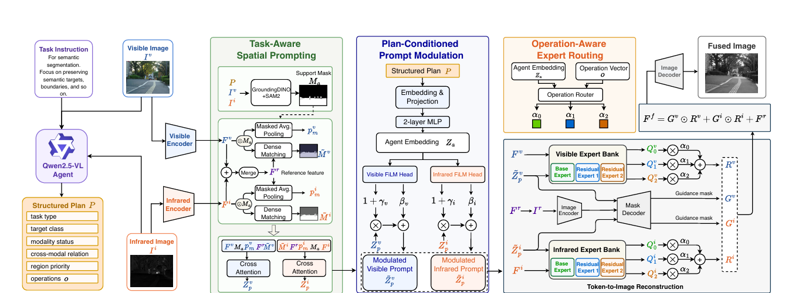

01Where?
Spatial Prompting
Uses task-relevant target classes and a support mask to guide where multimodal evidence should be emphasized.
Control signal
MaTask-Driven Agentic Evidence Arbitration for Infrared–Visible Image Fusion
From high-level task reasoning to executable, sample-specific control over multimodal evidence.
Paper and code links can be enabled in config.js when they are ready to share.
At a glance
The structured plan connects task and scene understanding to the fusion network's spatial, modality, and operational decisions.

Overview
Infrared–visible image fusion aims to integrate complementary multimodal evidence for downstream perception, yet existing methods typically learn a shared fusion policy that cannot adapt to task- and sample-specific requirements at inference time. To address this limitation, we propose AgentFuse, a task-driven evidence arbitration framework that reformulates fusion from static multimodal aggregation into task reasoning-guided adaptive control. Given an infrared–visible image pair and a task instruction, a vision-language agent jointly interprets the task objective and current observation to generate a structured plan describing spatial relevance, modality preference, and suitable fusion operations. AgentFuse translates this high-level plan into executable controls through three coordinated mechanisms: spatial prompting to determine where evidence should be emphasized, modality-aware prompt modulation to determine what evidence should be prioritized, and dynamic expert routing to determine how the selected evidence should be integrated. This design enables a unified fusion network to produce task-specific behaviors while adapting its evidence allocation to individual samples. Extensive experiments on multiple infrared–visible fusion benchmarks for semantic segmentation and object detection demonstrate that AgentFuse consistently generates fused images with improved downstream perception performance.
Core idea
The agent does not merely describe the scene. Its structured, sample-specific plan is converted into signals that directly condition the fusion network.
Uses task-relevant target classes and a support mask to guide where multimodal evidence should be emphasized.
MaEncodes task and scene conditions into a plan representation that modulates visible and infrared prompts.
zaCombines the plan embedding and operation vector to assign sample-dependent weights to fusion experts.
αTask-conditioned behavior
Changing the task instruction changes the plan and its control signals, while the downstream evaluation model remains fixed.

Task-conditioned plan comparison on MSRS (reported in the manuscript). The segmentation-oriented plan yields higher segmentation mIoU (0.7032 vs. 0.6674), while the detection-oriented plan yields higher detection mAP50 (0.9570 vs. 0.9125), consistent with their different objectives.
View comparison table ↓| Agent plan | Segmentation mIoU ↑ | Detection mAP50 ↑ | Detection mAP50:95 ↑ |
|---|---|---|---|
| Segmentation-oriented | 0.7032 | 0.9125 | 0.6970 |
| Detection-oriented | 0.6674 | 0.9570 | 0.7315 |
Values reproduced from the task-oriented agent-plan comparison reported in the manuscript. Bold values indicate the better result for the corresponding metric.
Practical inference
AgentFuse supports caching the structured plan and spatial support for a fixed image–task pair, avoiding repeated agent-prior generation.
Efficiency values follow the manuscript's reported MSRS inference analysis. The online latency includes prior generation; cached fusion latency excludes that stage.
Resources
Links will be enabled when the corresponding materials are ready for public release.
Citation
@misc{agentfuse2026,
title = {AgentFuse: Task-Driven Agentic Evidence Arbitration for Infrared-Visible Image Fusion},
year = {2026},
note = {Manuscript; please update author and publication details before citation}
}This is an editable citation template. Update author and publication metadata before public release.